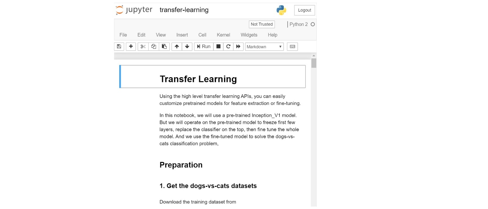
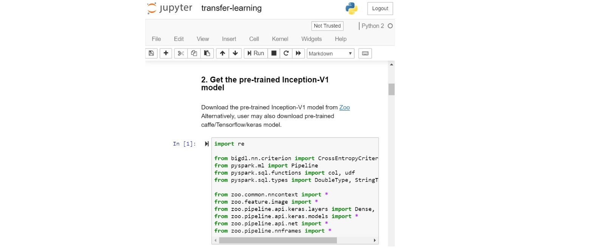

Docker User Guide
In order to simplify the Analytics Zoo installation and configuration, Analytics Zoo docker images have been built and provided on Docker Hub. These docker images have been pre-built with all the dependencies and readily configured to run a bunch of Analytics Zoo examples out-of-box on Linux (such as Ubuntu, CentOS), MacOS or Windows. The pre-installed packages are listed at the end of this page. This document provides step-by-step instructions for users to easily start using the Analytics Zoo docker:
- Launch an Analytics Zoo Docker container
- Run Analytics Zoo Jupyter Notebook example in a container
- Create a new Analytics Zoo Jupyter Notebook example
- Shut Down the Analytics Zoo Docker container
- Build a customized Analytics Zoo Docker image
Launch an Analytics Zoo Docker Container
A Linux user (CentOS or Ubuntu) can pull a Docker image and launch the Docker container with one command line.
1. Getting Ready
- Fresh install OS such as Linux OS (CentOS, Ubuntu etc), MacOS or Windows.
- Download and Install Docker following the instructions on: https://docs.docker.com/get-docker/
- (Optional) For Docker Desktop users on MacOS and Windows, the default resources (2 CPUs and 2GB memory) is relatively small, you may want to increase them by changing docker desktop configuration. 8GB memory and 4 CPUs should be a good estimator for most examples, and the exact memory requirements vary from different applications. For more information on this, please refer to docker documentation. (here for Mac and here for windows)
- (optional) Pull an Analytics Zoo docker image
- Note: It is optional to pull an Analytics Zoo docker image in advance, as the command “docker run” in Launch Analytics Zoo Docker container step will check the availability of the docker image and pull the image if it is absent. To manually pull the latest docker image, use:
sudo docker pull intelanalytics/analytics-zoo:latest
- Speed up pulling image by adding mirrors
To speed up pulling the image from dockerhub in China, add a registry's mirror. For Linux OS (CentOS, Ubuntu etc), if the docker version is higher than 1.12, config the docker daemon. Edit /etc/docker/daemon.json and add the registry-mirrors key and value:
{
"registry-mirrors": ["https://<my-docker-mirror-host>"]
}
For example, add the ustc mirror in China.
{
"registry-mirrors": ["https://docker.mirrors.ustc.edu.cn"]
}
Flush changes and restart docker：
sudo systemctl daemon-reload
sudo systemctl restart docker
If your docker version is between 1.8 and 1.11, find the docker configuration which location depends on the operation system. Edit and add DOCKER_OPTS="--registry-mirror=https://<my-docker-mirror-host>". Restart docker sudo service docker restart.
If you would like to speed up pulling this image on MacOS or Windows, find the docker setting and config registry-mirrors section by specifying mirror host. Restart docker.
Then pull the image. It will be faster.
sudo docker pull intelanalytics/analytics-zoo:latest
2. Launch Analytics Zoo Docker container
Launch an Analytics Zoo Docker container with this command line:
$sudo docker run -it --rm --net=host -e NotebookPort=12345 -e NotebookToken="your-token" intelanalytics/analytics-zoo:latest bash
- The value 12345 is a user specified port number.
- The value "your-token" is a user specified string.
If you want to specify an Analytics Zoo version, for example 0.7.0, use:
sudo docker run -it --rm --net=host \
-e NotebookPort=12345 \
-e NotebookToken="your-token" \
intelanalytics/analytics-zoo:0.7.0-bigdl_0.10.0-spark_2.4.3 bash
If you need to use http/https proxy, use:
sudo docker run -it --rm --net=host \
-e NotebookPort=12345 \
-e NotebookToken="your-token" \
-e http_proxy=http://your-proxy-host:your-proxy-port \
-e https_proxy=https://your-proxy-host:your-proxy-port \
intelanalytics/analytics-zoo:default bash
Once the container is sucessfully launched, you will automatically login to the container and see this as the output:
root@[hostname]:/opt/work#
Note: The /opt/work directory contains:
-
download-analytics-zoo.sh is used for downloading Analytics-Zoo distributions.
-
start-notebook.sh is used for starting the jupyter notebook. You can specify the environment settings and spark settings to start a - specified jupyter notebook.
-
analytics-Zoo-${ANALYTICS_ZOO_VERSION} is the Analytics-Zoo home of Analytics-Zoo distribution.
-
analytics-zoo-SPARK_x.x-x.x.x-dist.zip is the zip file of Analytics-Zoo distribution.
-
spark-${SPARK_VERSION} is the Spark home.
-
analytics-zoo is cloned from https://github.com/intel-analytics/analytics-zoo, contains apps, examples using analytics-zoo.
Run Analytics Zoo Jupyter Notebook example in a container
This section depends on the previous section “Launch Analytics Zoo Docker container”. After the user launches the Analytics Zoo Docker container, the Jupyter Notebook service can be started and Analytics Zoo Jupyter Notebook examples are available.
Start the Jupyter Notebook service in the container
After a Docker container is launched and user login to the container, user can start the Jupyter Notebook service inside the container.
In the /opt/work directory, run this command line to start the Jupyter Notebook service:
#start-notebook.sh
As a result, you will see the output message like below. This means the Jupyter Notebook service has started successfully within the container.
[I 01:04:45.625 NotebookApp] Serving notebooks from local directory: /opt/work/analytics-zoo-0.5.0-SNAPSHOT/apps
[I 01:04:45.625 NotebookApp] The Jupyter Notebook is running at:
[I 01:04:45.625 NotebookApp] http://(the-host-name or 127.0.0.1):12345/?token=...
[I 01:04:45.625 NotebookApp] Use Control-C to stop this server and shut down all kernels (twice to skip confirmation).
Connect to Jupyter Notebook service from a browser
After the Jupyter Notebook service is successfully started, users can connect to the Jupyter Notebook service from a browser.
- Get the IP address of the container
- Launch a browser, and connect to the Jupyter Notebook service with the URL: https://container-ip-address:port-number/?token=your-token
As a result, you will see the Jupyter Notebook like this:

Run Analytics Zoo Jupyter Notebook examples
After connecting to the Jupyter Notebook in the browser, users can run multiple Analytics Zoo Jupyter Notebook examples. The example shown below is the “dogs-vs-cats”.
- Click into the "dogs-vs-cats" folder:

- Open the notebook file:

- Start to run the "dogs-vs-cats" notebook:

- Run through the example and check the prediction:

Create a new Analytics Zoo Jupyter Notebook example
There are a few ways to quickly start creating a new Analytics Zoo Jupyter Notebook example. Users can “New” a Python notebook from scratch, or use the existing Jupyter Notebook example as an template and modify based on it.
“New” a Jupyter Notebook and write Analytics Zoo code from scratch
Once the user is connected to the Jupyter Notebook service and opens the address in a browser, the user can instantly click the “New” button and start creating a Python notebook example in the existing Analytics Zoo Jupyter Notebook folder.

“Make a Copy” from an existing Analytics Zoo Jupyter Notebook example and model after it
The user can also select an existing Analytics Zoo Jupyter Notebook example approximating to his own use case, then click "Make a Copy" and start tailing it.

Shut Down the Analytics Zoo Docker container
Users should shut down the Analytics Zoo Docker container after using it.
A user can list all the active Docker containers by command line:
$sudo docker ps
As a result, your docker container should be shown like:
CONTAINER ID IMAGE COMMAND CREATED STATUS PORTS NAMES
40de2cdad025 intelanalytics/analytics-zoo:latest "/opt/work/start-n..." 3 hours ago Up 3 hours upbeat_al
Shut down the corresponding docker container by its ID:
$sudo docker rm -f 40de2cdad025
Build a customized Analytics Zoo Docker image
A set of pre-build Analytics Zoo Docker images have been provided on the Docker Hub. Users can retrieve these Docker images by “docker pull” command and specify a tag for which Docker image to download. For example:
sudo docker pull intelanalytics/analytics-zoo:0.7.0-bigdl_0.10.0-spark_2.4.3
sudo docker pull intelanalytics/analytics-zoo:latest
It is recommended to use a pre-build Docker image on the Docker Hub. However you can build or customize an Analytics Zoo Docker image if you do need to do so. Visit Analytics Zoo Dockerfile. Customize it and build the image. For example:
- Build an Analytics Zoo Docker image with latest Analytics Zoo nightly build:
sudo docker build --rm -t intelanalytics/analytics-zoo:default .
- Build with http/https proxy:
sudo docker build \
--build-arg http_proxy=http://your-proxy-host:your-proxy-port \
--build-arg https_proxy=https://your-proxy-host:your-proxy-port \
--rm -t intelanalytics/analytics-zoo:default .
- Build with specific Analytics Zoo version, BigDL version or Spark version:
sudo docker build \
--build-arg ANALYTICS_ZOO_VERSION=0.7.0 \
--build-arg BIGDL_VERSION=0.11.1 \
--build-arg SPARK_VERSION=2.4.3 \
--rm -t intelanalytics/analytics-zoo:0.7.0-bigdl_0.10.0-spark_2.4.3 .
Pre-installed Packages
The Analytics-Zoo Docker images have been pre-built with below packages:
-
git
-
maven
-
Oracle jdk 1.8.0_152 (in /opt/jdk1.8.0_152)
-
python 3.6.9
-
pip
-
numpy
-
scipy
-
pandas
-
scikit-learn
-
matplotlib
-
seaborn
-
jupyter
-
wordcloud
-
moviepy
-
requests
-
tensorflow
-
spark-${SPARK_VERSION} (in /opt/work/spark-${SPARK_VERSION})
-
Analytics-Zoo distribution (in /opt/work/analytics-zoo-${ANALYTICS_ZOO_VERSION})
-
Analytics-Zoo source code (in /opt/work/analytics-zoo)
In addition to the general Analytics Zoo docker image introduced in this page, the Analytics Zoo hyperzoo image is also pre-built, which is added K8s and cluster serving support. To learn about the hyperzoo imgae, visit here.